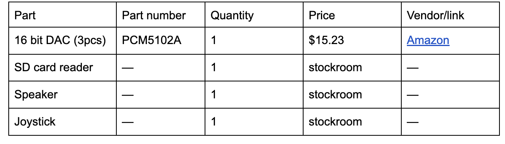
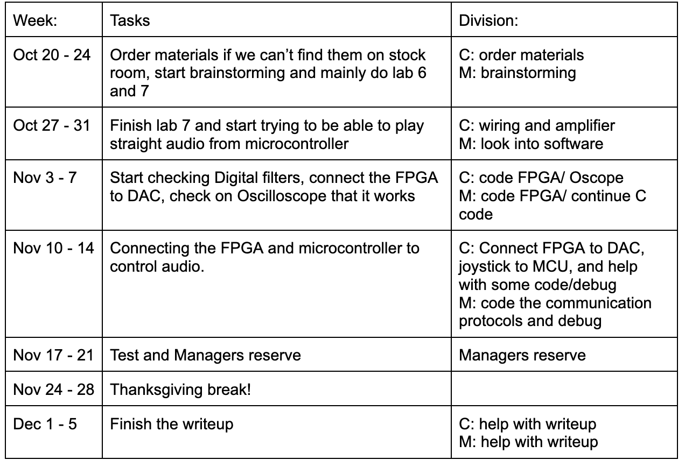
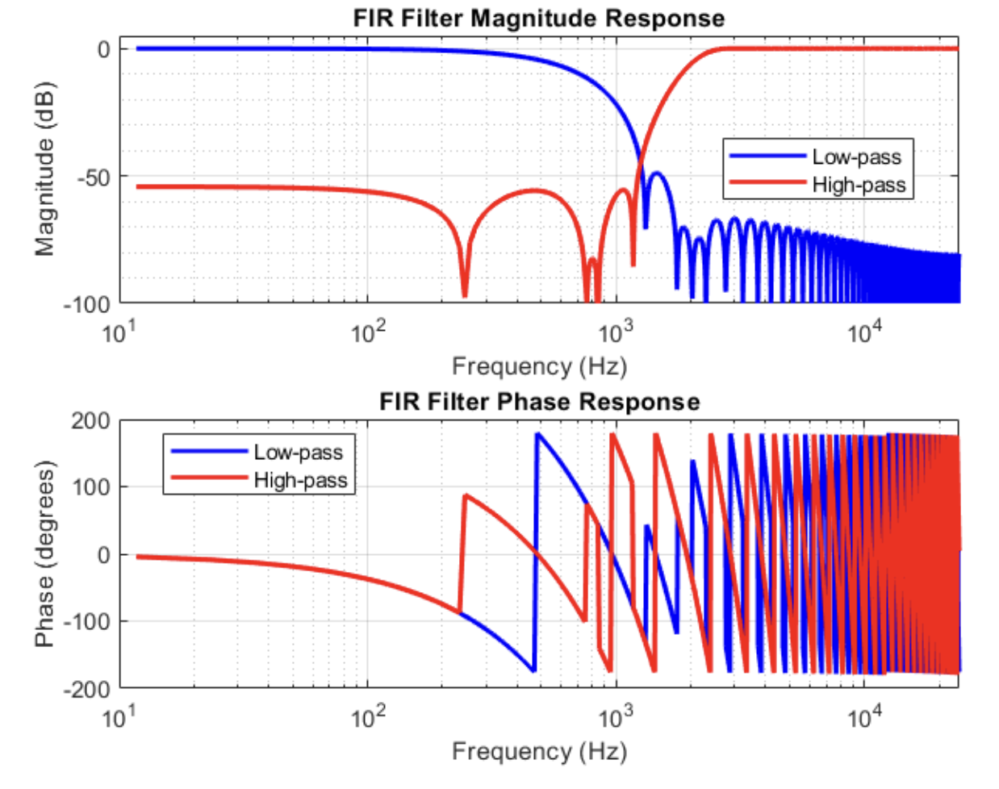
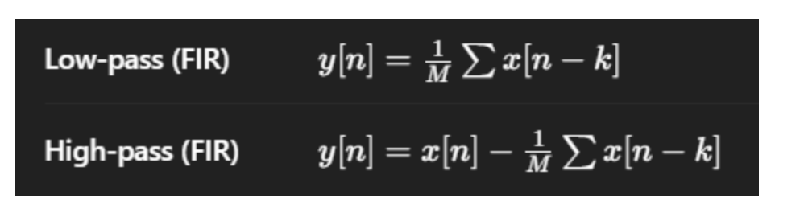
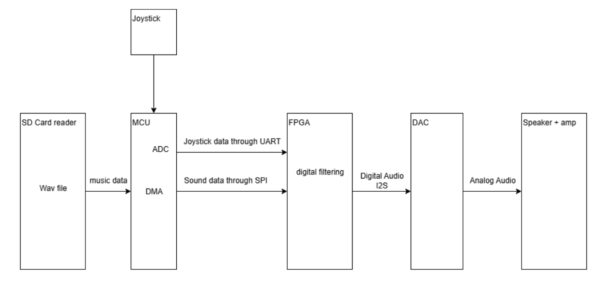

DJ board Project by Carlos Ojeda de Silva and Maynor Bac-Itzep
Summary/Overview
The project will consist on us putting an SD card reader (SPI) on the microcontroller, where it will then relay (SPI) the data to the FPGA [may use DMA to relay music without interfering with the microcontroller], where the FPGA will use shift registers to implement digital filters (adding previous values with a multiplier to the output), then we will have a Joystick to control filters [Ex: low pass, high pass, band pass] by having one on the x axis and the other one in the y axis.
Bill of Materials
1. DAC (stockroom?) if not: [PCM5102A] in 
(faster delivery and 3 pieces in case we mess up)
2. SD card reader (stockroom, able to use UART or SPI)
3. Speaker (Lab 4)
4. Joystick (stockroom)
Specs needed:
1. SD card reader (NEW hardware)
2. microcontroller DMA (New feature)
3. microcontroller Joystick ADC (New feature)
4. FPGA push register use for digital filtering (new feature)
5. FPGA I2S communication with DAC (new feature)Risk
Not sure how DMA will work, but in case we can’t get that to work well, we could use the microcontroller’s function to act like an ADC for the joystick.
Timeline

Bode Plot of digital filters (not exactly the ones we’ll use)

Math used
LUT’s needed: Depends on the degrees of the filters used, but the LUT’s used should be:
N =8* max(M,K), where M is the degree of the low pass filter and K is the degree of the High pass filter. The ones shown above use M=K=101. This is since each degree of a filter needs a new register as a push register, and we are using 8 bits per sound sample
Relevant formulas:
n=2fc/(fs), where fs is normally 48,000 Hz for Audio and fc is our cutoff frequency for each filter.

BLOCK
